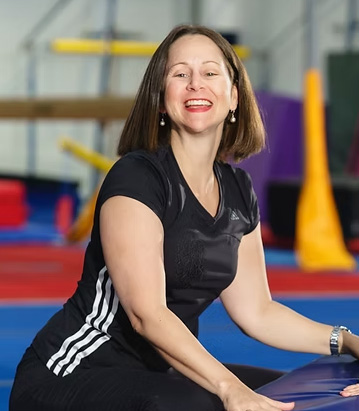
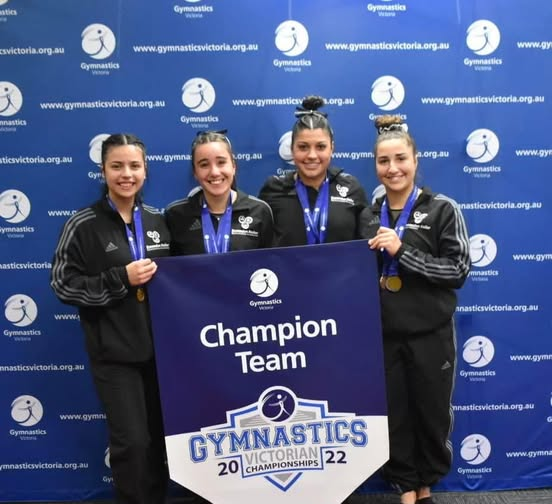

I don't have any personal connection to Essendon Keilor Gymnastics Academy. Nobody in my family trains there, and I haven't visited. Everything in this profile comes from two places: my results database, and EKGA's own public materials, their website and Facebook page. I'll flag it clearly whenever I'm drawing on their version of their own history, and for the complete story I'd encourage you to read their full About page directly; I'm only hitting the highlights here.
Last time, I profiled Melbourne Acrobatic Gymnastics Academy, a club I have a direct connection to. This week is different: a club I know only through what the data and the public record tell me.
A dream financed twice
According to EKGA's own account, Christy Hemphill had been running a community gymnastics programme in Melbourne's north-west before deciding to strike out on her own. In 2005, she resigned from her job, took out a second mortgage, and maxed out credit cards to open a club of her own. EKGA opened its doors in November 2005 at Roberts Road, Airport West, kitted out with salvaged equipment and second-hand mats. Within twelve months, membership had grown from zero to more than 300 participants.

The timeline EKGA publishes since then reads like a steady accumulation of firsts: a second Airport West building in 2009, the same year the club crowned its first Australian Champion; full ownership of both buildings by 2012; in 2013, what the club describes as Australia's first dedicated gymnastics classes for blind and vision-impaired children; its first international-level coach in 2015. In 2022, the organisation split into two entities, Essendon Keilor Gymnastics Academy for the competitive programme, and EKGA Gymsports for recreational classes, birthday parties, and school holiday programmes. By 2025, the club says it was marking twenty years and more than 20,000 children through its doors, with over 60 coaches, managers, and administrators on staff, three of them there since the beginning in 2005.
The competitive entity is the one that shows up in my data, which tracks results, not enrolment. So while EKGA's public story is a broad one, about thousands of recreational gymnasts and a community programme built from nothing, what I can actually verify is the competitive pathway: the athletes who show up at Victorian competitions, level by level, season by season.
What the numbers say: WAG
Forty WAG athletes appear in my database for EKGA, with 353 results across 25 competitions spanning the 2024, 2025, and 2026 seasons. At Level 8 and above, the club has accumulated 22 medals in my data: 5 gold, 7 silver, and 10 bronze.
Katia Taranto is the clearest thread running through the WAG data. She has competed at Level 10 in every season I have on record, from 42.15 (1st) at the BTYC WAG Senior Invite in 2024 through to 44.6 (1st) at the 2026 Knox Senior WAG Invitational, with a 5th-place finish at the 2025 Senior Victorian Championships in between. That consistency lines up with an EKGA Facebook post from 2022, in which Taranto was part of the club's Level 10 team that won the Victorian State Championships alongside teammates Sienna, Ella, and Alessia, a result from before my database coverage begins, but a sign this is a gymnast the club has been building around for years.

Mila Ferrante is the standout of the 2026 season so far. She won the Level 8 Division 2 all-around at the Senior Judges Invitational with 44.765, then stepped up to the tougher Division 1 for the championship season, finishing 19th at the Senior Victorian Championships with 44.0. Calista Amirsonis and Julia Maidment round out the Level 9 and 10 group, and at the younger end, Harriet Gluschenko placed 5th at Level 7 at the 2025 Junior Victorian Championships with 45.1, the strongest junior result in my EKGA data.
What the numbers say: MAG
Thirty-two MAG athletes appear in my database, with 248 results across 23 competitions over the same three seasons. At Level 8 and above, EKGA's MAG programme has 14 medals in my data: 10 silver and 4 bronze. No individual gold at Level 8 or above shows up in my Victorian results, which makes what happened outside my database this year worth its own section.
Lewis Gatt is the highest-level MAG athlete in my data, competing at Level 9 across the 2025 and 2026 seasons with a best all-around of 62.15 at the 2025 Senior Victorian Championships. But the pairing that stands out most is Geoffrey Fairservice and Patrick Deane. Fairservice competed at Level 7 through 2024 and 2025 before stepping up to Level 8 this year; Deane followed a level behind, moving from Level 6 in 2024 to Level 7 in 2025, and joined Fairservice at Level 8 in 2026. Both also made single appearances at Level 9 this year, at the BTYC MAG Senior Extravaganza. Fairservice's rings scores and Deane's high bar scores have been consistently among the strongest apparatus results EKGA has posted in my data, foreshadowing exactly the events they'd go on to podium in.
Two athletes who came up through the level system together, on the same two apparatus that would carry them to the top of the podium at the Australian Championships.